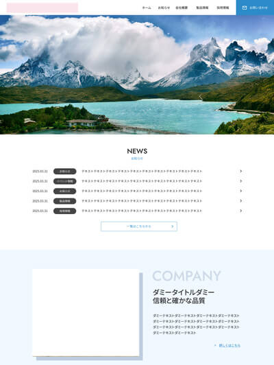

About Me
1977年生まれ、埼玉県在住。 販売員、飲食店勤務など接客をメインに各種事務手続き・お客様対応を経験し、社会人としての知識を身につけました。
飲食店勤務時に、Webサイトの制作を担当したのをきっかけにWebデザインスクールに通い、Web制作業界への転職を決意。その後フリーランス、派遣を経験し、Web制作会社で10年間勤務しました。
Web制作会社では、コワーキングスペースの運営、お客様対応から経理、そしてコーディングを担当いたしました。
スキル一覧
- HTML5 / CSS3（レスポンシブ対応、BEM記法）
- JavaScript / jQuery（既存コードの理解・カスタマイズ、スライダー導入）
- WordPress（テーマ編集・カスタマイズ）
- Photoshop / Figma（デザインデータからのコーディング）
好きなもの
コーディング、バナー制作
家族構成
夫・小学生の息子1人＆カナヘビ（爬虫類）
Works
Web制作会社にてコーダーとして勤務し、主にHTML・CSS・WordPressを用いたコーディングを担当してまいりました。
公開不可の案件が多いため、本ポートフォリオページを作成しました。
実務ではレスポンシブ対応やSEOを意識したコーディングを行っております。

企業コーポレートサイトのコーディング
ページ数：TOP＋下層10ページ
使用技術：HTML/CSS、jQuery、WordPress
- 担当業務
- デザインデータからのコーディング全般
- レスポンシブ対応（PC/SP）
- トップページのスライダー実装
※掲載不可のため、イメージを掲載